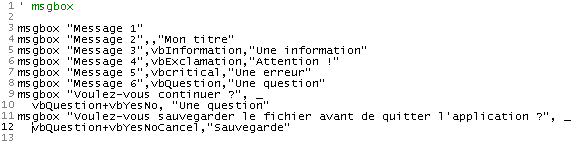
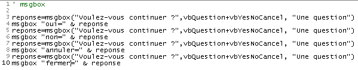
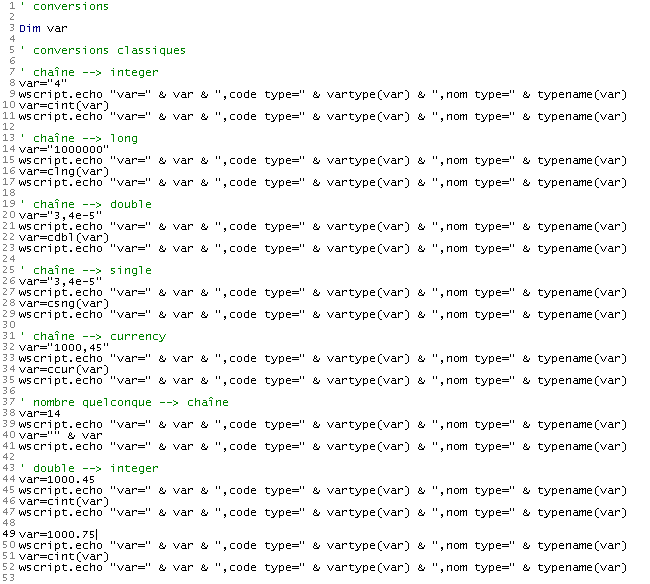
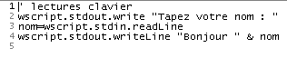
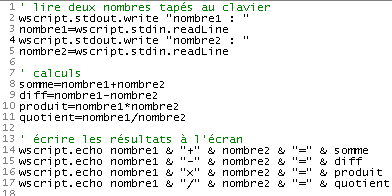
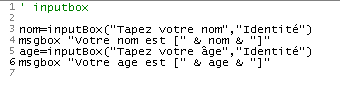
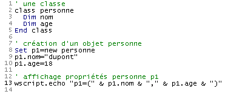
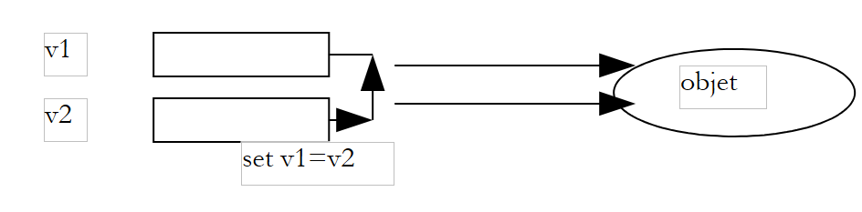
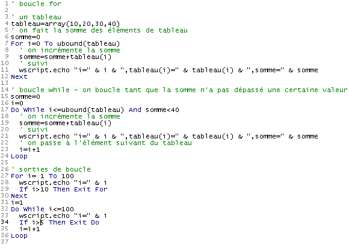

3. 编程基础 VBSCRIPT
在描述了 VBScript 脚本的可能运行环境之后，我们现在来探讨该语言本身。在接下来的内容中，我们将基于以下条件进行说明：
- 脚本的容器是 WSH
- 脚本位于扩展名为 .vbs 的文件中
在介绍一个概念时，我们通常按照以下步骤进行：
- 如有必要，先介绍该概念
- 展示一个示例程序及其运行结果
- 如有必要，对结果和程序进行说明
VBScript 容器对脚本文本中的“大小写”不敏感。因此，无论是 wscript.echo "coucou" 还是 WSCRIPT.ECHO "coucou"，都可以随意书写。
下文介绍的程序会在屏幕上进行大量输出，因此我们将再次介绍 wscript 对象的输出方法。
3.1. 显示信息
我们之前已经使用过 echo 对象的 wscript 方法，但该对象还提供了其他用于屏幕输出的方法，如下面的脚本所示：
程序 | 结果 |
 |
请注意以下几点：
- 单引号后面的所有文本均被视为脚本注释，不会被 WSH 解释（第 1 行）。
- 方法 echo 写入其参数后跳转到下一行，方法 writeLine 也是如此（第 2 行和第 6 行）
- 方法 write 写入其参数，但不换行（第 3 行）
- 换行符由两个字符组成，即代码 ASCII 中的 13 和 10。 因此第4行由表达式 chr(13) & chr(10) 表示，其中 chr(i) 是代码字符 ASCII i，& 是字符串连接运算符。因此 "chat" & "eau" 即为字符串 "chateau"。
- 换行符可通过常量 vbCRLF 更简便地表示（第 5 行）
3.2. E 在 VBScript 脚本中编写指令
默认情况下，每行只写一条指令。不过，也可以在一行中写多条指令，只需用字符分隔即可：例如 inst1:inst2:inst3。 如果一行过长，可以将其拆分为若干部分。此时，指令的各个部分必须以两个字符（空格）_结尾。我们以之前的示例为例，重新编写指令：
程序 | 结果 |
 |
3.3. 使用函数 msgBox 进行输出
虽然在本文档中，我们几乎完全使用 wscript 对象在屏幕上写入内容，但其实还有一种更复杂的函数，用于在窗口中显示信息。这就是 msgbox 函数，通常使用三个参数：
msgbox 消息、图标+按钮、标题
- message 是要显示的消息文本
- 图标+按钮（可选）实际上是一个数字，用于指定要在消息窗口中放置的图标类型和按钮。该数字通常由两个数字相加而成：第一个数字决定图标，第二个数字决定按钮
- 标题是显示在消息窗口标题栏中的文本
用于指定显示窗口图标和按钮的值如下：
常量 | 值 | 描述 |
vbOKOnly | 0 | 仅显示按钮 OK。 |
vbOKCancel | 1 | 显示 OK 和“取消”按钮。 |
vbAbortRetryIgnore | 2 | 显示“放弃”、“重试”和“忽略”按钮。 |
vbYesNoCancel | 3 | 显示“是”、“否”和“取消”按钮。 |
vbYesNo | 4 | 显示“是”和“否”按钮。 |
vbRetryCancel | 5 | 显示“重试”和“取消”按钮。 |
vbCritical | 16 | 显示“严重错误”图标。 |
vbQuestion | 32 | 显示“请求警告”图标。 |
vbExclamation | 48 | 显示“警告消息”图标。 |
vbInformation | 64 | 显示“信息”图标。 |
vbDefaultButton1 | 0 | 第一个按钮是默认按钮。 |
vbDefaultButton2 | 256 | 第二个按钮是默认按钮。 |
vbDefaultButton3 | 512 | 第三个按钮是默认按钮。 |
vbDefaultButton4 | 768 | 第四个按钮是默认按钮。 |
vbApplicationModal | 0 | 模态应用程序；用户必须先回复消息，才能继续在当前应用程序中工作。 |
vbSystemModal | 4096 | 模态系统；所有应用程序将暂停，直到用户对消息作出响应。 |
以下是示例：
程序 | ||||||||||||||||||||||||
 | ||||||||||||||||||||||||
结果 | ||||||||||||||||||||||||
| ||||||||||||||||||||||||


在某些情况下，会显示一个既作为信息窗口又作为输入窗口的窗口。如果提出一个问题，例如想知道用户是点击了按钮 oui 还是按钮 non。 函数 msgBox 返回一个结果，我们在前面的程序中尚未使用过。该结果是一个整数，表示用户用于关闭显示窗口的按钮：
常量 | 值 | 所选按钮 |
vbOK | 1 | OK |
vbCancel | 2 | 取消 |
vbAbort | 3 | 放弃 |
vbRetry | 4 | 重试 |
vbIgnore | 5 | 忽略 |
vbYes | 6 | 是 |
vbNo | 7 | 否 |
以下程序演示了如何使用函数 msgBox 的返回结果。程序将弹出一个带有“是”、“否”和“取消”按钮的窗口，共弹出 4 次。操作步骤如下：
- 点击“是”
- 点击“否”
- 点击“取消”
- 不点击任何按钮直接关闭窗口。该程序表明，这相当于点击了“取消”按钮。
程序 | ||||
 | ||||
结果 | ||||
|


3.4. 在VBScript中可用的数据
VBscript 仅支持一种数据类型：变体（Variant）。 Variant 的值可以是数字（4、10.2）、字符串（"你好"）、布尔值（true/false）、日期（#01/01/2002#）、对象的地址，或是将所有这些数据放在一个称为数组的结构中。
让我们来看看以下程序及其结果：
程序 | 结果 |
 |
注释：
- 某些编程语言（C、C++、Pascal、Java、C# 等）要求在使用变量之前必须先对其进行声明。这种声明包括指定变量的名称及其可容纳的数据类型（整数、实数、字符串、日期、布尔值等）。声明变量可以实现以下功能：
- 了解变量所需的内存空间——因为不同数据类型需要不同的内存空间
- 验证程序的一致性。例如，若 i 是整数，而 c 是字符串，则将 i 与 c 相乘毫无意义。 如果变量 i 和 c 的类型已被程序员声明，那么负责在程序执行前对其进行分析的程序可能会报告此类不一致。
与大多数单数据类型的脚本语言（Perl、Python、Javascript 等）一样，VBScript 允许不声明变量。上例中就是如此。
- 请注意不同数据的语法
- 10.2，第10行（小数点而非逗号）。需要注意的是，屏幕上显示的是10.2。
- 第13行中的1.4e-2（科学记数法）。显示结果为0.014
- [#01/10/2002#]（第26行）表示2002年1月10日。 因此，VBScript使用#mm/jj/aaaa#格式来表示日期jj，即mm月份的aaaa年
- 第31行和第34行中的布尔值true和false（真/假）。如第32行和第35行所示，这两个值分别由整数-1和0表示。 当布尔值与字符串连接时，这些值会分别变为字符串“Vrai”和“Faux”，如第33行和第36行所示。顺便提一下，连接运算符 & 不仅可以连接字符串，还可以连接其他内容。
- 由于变量 v 未指定类型，因此它可以依次存储不同类型的值。
3.5. L 变体类型的子类型
官方文档对变体（Variant）可包含的不同数据类型有如下说明：
除了简单的数字/字符串区分之外，Variant 还可以区分不同类型的数字信息。例如，某些数字信息代表日期或时间。当这些信息与其他日期或时间数据一起使用时，结果始终以日期或时间的形式表示。 您还可以使用其他类型的数字信息，从布尔值到大型浮点数。Variant 中可能包含的这些不同类别信息即为子类型。在大多数情况下，您只需将数据放入 Variant 中，它就会根据这些数据以最合适的方式进行处理。
下表列出了 Variant 可能包含的各种子类型。
子类型 | 描述 |
Empty | Variant 未初始化。对于数值变量，其值为零；对于字符串变量，其值为长度为零的字符串 ("")。 |
Null | Variant 故意包含错误数据。 |
Boolean | |
字节 | 包含 0 到 255 之间的整数。 |
Integer | 包含 -32 768 到 32 767 之间的整数。 |
货币 | -922 337 203 685 477.5808 至 922 337 203 685 477.5807。 |
Long | 包含一个介于 -2 147 483 648 到 2 147 483 647 之间的整数。 |
单精度 | 包含一个单精度浮点数，负值范围为 -3,402823E38 至 -1,401298E-45； 正值范围为 1,401298E-45 至 3,402823E38。 |
双精度 | 包含一个双精度浮点数，负值范围为 -1,79769313486232E308 至 -4,94065645841247E-324； 正值范围为 4,94065645841247E-324 至 1,79769313486232E308。 |
日期（时间） | 包含一个数字，表示 100 年 1 月 1 日至 9999 年 12 月 31 日之间的日期。 |
字符串 | 包含一个长度可变的字符串，上限约为 20 亿个字符。 |
Object | 包含一个对象。 |
Error | 包含一个错误编号。 |
3.6. C 识别变体中包含的数据的确切类型
变量类型的变量可以包含各种类型的数据。有时我们需要知道这些数据的确切性质。如果我们在程序中写入 produit=nombre1*nombre2，我们会假设 nombre1 和 nombre2 是两个数值数据。 但有时我们无法确定，因为这些值可能来自键盘输入、文件或任何外部来源。因此，我们需要验证 nombre1 和 nombre2 中数据的类型。 通过函数 typename(var)，我们可以确定变量 var 中所含数据的类型。以下是示例：
程序 | 结果 |
 |
另一个可能的函数是 vartype(var)，它返回一个数字，该数字代表变量 var 所包含的数据类型：
常数 | 值 | 描述 |
vbEmpty | 0 | 空（未初始化） |
vbNull | 1 | 空（无有效数据） |
vbInteger | 2 | 整数 |
vbLong | 3 | 长整型 |
vbSingle | 4 | 单精度浮点数 |
vbDouble | 5 | 双精度浮点数 |
vbCurrency | 6 | 货币 |
vbDate | 7 | 日期 |
vbString | 8 | 频道 |
vbObject | 9 | 自动化设备 |
vbError | 10 | 错误 |
vbBoolean | 11 | 布尔值 |
vbVariant | 12 | 变体（仅用于变体数组） |
vbDataObject | 13 | 非自动化对象 |
vbByte | 17 | 字节 |
vbArray | 8192 | 表 |
注：这些常量由 VBScript 指定。因此，您可以在代码中的任何位置使用这些名称来代替实际值。
以上信息来自 VBscript 的文档。该文档有时存在错误，可能是由于从 VB 的文档中复制粘贴所致。 VBScript 中的 vartype 函数仅实现了上述功能的一部分。
针对 vartype 重写的上述程序产生以下结果：
程序 | 结果 |
 |
3.7. D 声明脚本使用的变量
我们曾指出，声明脚本使用的变量并非强制要求。在这种情况下，如果我们写：
1) somme=4
...
2) somme=smme+10
如果第 2 行指令中出现输入错误，将 smme 误写为 smme，VBScript 不会报告任何错误。它会将 smme 视为一个新变量，并创建该变量，在第 2 行指令的上下文中将其初始化为 0 并加以使用。
此类错误往往难以追踪。因此建议在脚本开头使用 option explicit 指令强制声明变量。此后，所有变量在首次使用前都必须通过 dim 语句进行声明：
option explicit
...
dim somme
1) somme=4
...
2) somme=smme+10
在此示例中，VBScript 会提示存在未声明的变量 smme，如 2) 所示，如下例所示：
程序 | 结果 |
 |
虽然文档中的简短示例中大多未声明变量，但一旦开始编写具有实际意义的脚本，我们就会强制声明它们。届时将系统地使用 Option explicit 指令。
3.8. 的转换函数
VBScript会根据上下文将变量的数据转换为字符串、数字、布尔值等。 大多数情况下，这种转换运行良好，但有时也会带来一些意外，正如我们稍后将看到的。因此，我们可能希望“强制”变量的数据类型。VBScript 具有将表达式转换为各种数据类型的转换函数。以下是其中的一些：
Cint (表达式) | 将表达式转换为短整数（integer） |
Clng (表达式) | 将表达式转换为长整型（long） |
Cdbl (表达式) | 将表达式转换为双精度浮点数（double） |
Csng (表达式) | 将表达式转换为单精度实数 (single) |
Ccur (表达式) | 将表达式转换为货币数据 (currency) |
以下是一些示例：
程序 |
 |
结果 |
|
3.9. L 读取键盘输入的数据
wscript 对象允许脚本获取键盘输入的数据。wscript.stdin.readLine 方法可读取通过键盘输入并按“回车”键确认的一行文本。读取到的这一行文本可赋值给一个变量。
程序 | 结果 |
 | |
注释：
- 在结果列的 [Tapez votre nom : st] 行中，st 是用户输入的行。
即使键盘输入的文本是一个数字，它首先仍被视为字符串，如下例所示：
程序 | 结果 |
 |
如果该数字用于算术运算，VBscript 会自动将字符串转换为数字，但并非总是如此。让我们看看以下示例：
程序 | 结果 |
 |
从结果中可以看出，脚本的第 8 行并未按预期运行，这是因为（遗憾的是）在 VBScript 中，运算符 + 有两种含义：两个数字的加法，或者两个字符串的连接（两个字符串被拼接在一起）。 我们之前提到，键盘输入的数字会被识别为字符串，而 VBScript 会根据需要将这些字符串转换为数字。对于只能涉及数字的 -、*、/ 运算，它处理得当；但对于同样可能涉及字符串的 + 运算符，它却未能正确处理。 在此，它默认用户是要进行字符串拼接。
解决此问题的简便方法是在读取字符串时立即将其转换为数字，如下文对前文程序的改进所示：
程序 | 结果 |
 |
3.10. S 使用inputbox函数输入数据
有时我们可能希望在图形界面中输入数据，而不是通过键盘输入。此时可以使用函数 inputBox。该函数支持许多参数，其中只有前两个参数经常被使用：
reponse=inputBox(message,title)
- message：向用户提出的问题
- 标题（可选）：您为输入窗口指定的标题
- reponse：用户输入的文本。如果用户未作回答就关闭了窗口，reponse 则为空字符串。
以下是一个示例，用于询问某人的姓名和年龄。对于姓名，我们提供信息并执行 OK。对于年龄，我们也提供信息，但执行“取消”。
程序 | ||||
 | ||||
结果 | ||||
|


3.11. U 使用结构化对象
使用VBScript可以创建具有方法和属性的对象。为了避免复杂化，我们这里将介绍一个仅具有属性而没有方法的对象。以一个人为例。他/她有许多特征属性：身高、体重、肤色、眼睛颜色、头发颜色……我们只选取其中两个：姓名和年龄。 在使用对象之前，必须先创建一个用于生成这些对象的“模具”。在 VBScript 中，这通过类来实现。类 personne 可以定义如下：
class personne
Dim nom,age
End class
[Dim nom,age] 语句定义了 personne 类的两个属性。要创建 personne 类的实例，需编写如下代码：
为什么不写
因为变量不能直接包含对象，它只能包含对象的地址。当写下 set personne1=new personne 时，会发生以下事件序列：
- 创建了一个名为 personne 的对象。这意味着为其分配了内存。
- 该对象 personne 的地址被赋值给变量 personne1
因此，对于变量 personne1 和 personne2，我们得到以下内存布局：
 |
从语义上讲，我们可以将 personne1 视为 personne 的对象。 如果我们记得 personne1 实际上是对象 personne 的地址，而不是 personne 对象本身，那么这种不严谨的说法是可以接受的。
我们曾提到，对象 personne 具有两个属性 nom 和 age。如何利用这些属性？正如前文所述，可通过 objet.propriété 这种表示法。因此
personne1.nom 表示人物 1 的姓名，personne1.age 表示其年龄。以下是一个简短的示例程序：
程序 | 结果 |
 |
上述程序可修改如下：
程序 | 结果 |
 |
此处我们使用了 with ... end with 结构，该结构允许在表达式中“提取”对象名称。第 9 行-12 和 15-18 行中的 with p1 ... end with 结构，使得我们可以使用 .nom* 代替 *p1.nom*，并使用 .age* 代替 *p1.age*。 这有助于简化那些反复使用相同对象名称的指令编写。
3.12. 为变量赋值
有两种语句可用于为变量赋值：
- 变量=表达式
- set 变量=表达式
形式 2 仅适用于结果为对象引用的表达式。对于所有其他类型的表达式，应使用形式 1。这两种形式的区别如下：
- 在语句 variable=expression 中，变量被赋予了一个值。如果 v1 和 v2 是两个变量，写 v1=v2 会将 v1 的值赋给 v2。因此，一个值被复制到了两个不同的位置。如果随后修改了 v2 的值，v1 的值则完全不受影响。
 |
- 在语句 set variable=expression 中，变量接收的值是某个对象的地址。如果 v1 和 v2 是两个变量，且 v2 是对象 obj2 的地址，则写入 set v1=v2 会将 v1 的值赋给 v2，即对象 obj2 的地址。 当脚本随后操作 v1 和 v2 时，被操作的并非 v1 和 v2 的“值”，而是 v1 和 v2 “指向”的对象，即此处的同一个对象。 我们说 v1 和 v2 是指向同一个对象的两个引用，通过 v1 或 v2 操作该对象没有任何区别。换句话说，修改 v2 引用的对象会同时修改 v1 引用的对象。
 |
以下是一个示例：
程序 | 结果 |
 |
3.13. 表达式的求值
用于求值表达式的主要运算符如下：
运算符类型 | 运算符 | 示例 |
算术 | +,-,*,/ | |
比较 | <, <= >, >= =,<> | a<>b 成立，当且仅当 a 不同于 b a=b 成立当且仅当 a 等于 b a 和 b 可以都是数字，也可以都是字符串。在后一种情况下，如果按字母顺序排列时 chaine1 在 chaine2 之前，则 chaine1<chaine2。在字符串比较中，按字母顺序排列时大写字母优先于小写字母。 |
逻辑 | and, or, not, xor | 此处的所有操作数均为布尔值。 当 bool1 或 bool2 为真时，bool1 or bool2 为真 当 bool1 和 bool2 均为真时，bool1 and bool2 为真 当 bool1 为假时，not bool1 为真；反之亦然 当布尔值 bool1 或 bool2 中仅有一个为真时，bool1 xor bool2 为真 |
字符串连接 | &, + | 不建议使用 + 运算符来连接两个字符串，因为这可能会与两个数字的加法产生混淆。因此，应仅使用 & 运算符。 |
3.14. C语言 控制程序的执行
3.14.1. E 执行条件操作
用于根据条件真/假值执行操作的 VBScript 语句如下：
首先评估表达式 expression。该表达式必须返回布尔值。如果其值为真，则执行 then 中的操作；否则，如果存在 else，则执行其中的操作。 |
下面是一个展示 if-then-else 不同变体的程序：
程序 | 结果 |
 |
注释：
- 在 VBScript 中，可以使用 `instruction1:instruction2:...:instructionn` 的形式，而不是每行写一条指令。例如，第 10 行就是利用了这一特性。
3.14.2. E 重复执行操作
迭代次数已知的循环 |
可随时使用 exit for 语句退出 for 循环。 |
迭代次数未知的循环 |
可随时使用 exit do 语句退出 do while 循环。 |
下面的程序说明了这些要点：
程序 |
 |
结果 |
注：在程序开发阶段，程序“死循环”的情况并不少见，c.a.d，即程序永远无法停止。通常，程序会执行一个无法验证退出条件的循环，例如以下示例：
' 无限循环
i=0
Do While 1=1
i=i+1
wscript.echo i
Loop
' 同类另一种
i=0
Do While true
i=i+1
wscript.echo i
Loop
如果运行上述程序，第一个循环将永远不会自动停止。可以通过在键盘上输入 CTRL-C（同时按下 CTRL 和 C 键）来强制停止它。
3.14.3. 结束程序执行
指令 wscript.quit n 通过返回等于 n 的错误代码来终止程序的执行。 在 DOS 环境下，可通过 if ERRORLEVEL n 语句检测该错误代码，若最后执行的程序返回的错误代码 >=n，则该条件为真。请看以下程序及其结果：
 |
程序执行完毕后，立即发出以下三个 DOS 命令：
命令 DOS 1 用于检测程序返回的错误代码是否 >=5。如果是，则输出（echo）5；否则不输出任何内容。
命令 DOS 3 检查程序返回的错误代码是否 >=4。如果是，则输出 4；否则不输出。
命令 DOS 5 用于检测程序返回的错误代码是否大于等于 3。如果是，则输出 3；否则不输出任何内容。
从显示的结果可以推断，程序返回的错误代码是 4。
3.15. L 变体中的数据表
变量 T 可以包含一组值。此时，我们称其为数组。数组 T 具有以下特性：
- 可以通过语法 T(i) 访问数组 T 的第 i 个元素，其中 i 是介于 0 和 n-1 之间的整数（称为索引），若 T 包含 n 个元素。
- 可通过表达式 ubound(T) 获取数组 T 的最后一个元素的索引。此时，数组 T 的元素个数为 ubound(T)+1。该数值通常被称为数组的大小。
- 变量 T 可以通过语法 T=array() 初始化为空数组，或通过语法 T=array(元素0, 元素1, ...., 元素n) 初始化为一组元素
- 可以向已创建的数组 T 中添加元素。为此，使用语句 redim preserve T(N)，其中 N 是数组 T 中最后一个元素的新索引。该操作称为重定尺寸（redim）。关键字 preserve 表示在重定尺寸时，必须保留数组的当前内容。 若未使用该关键字，则 T 将被重新调整大小并清空其元素。
- 数组 T 的元素 T(i) 属于变量类型，因此可以包含任意值，特别是另一个数组。在这种情况下，记法 T(i)(j) 表示数组 T(i) 的第 j 个元素。
下述程序演示了数组的这些特性：
程序 | 结果 |
 |
注释
- 这里使用了一个名为 join 的函数，稍后会详细说明。
3.16. L 数组变量
在 VBScript 中还有另一种使用数组的方法，即使用数组变量。与标量变量不同，此类变量必须通过 dim 语句进行声明。可以进行多种声明：
- dim 数组(n) 声明一个包含 n+1 个元素的静态数组，元素编号从 0 到 n。此类数组无法调整大小
- dim 数组() 声明一个空的动态数组。使用时需通过 redim 语句调整其大小，其操作方式与包含数组的变量相同
- dim 数组(n,m) 声明一个包含 (n+1)*(m+1) 个元素的二维数组。数组的第 (i,j) 个元素记为 tableau(i,j)。需注意其与 Variant 的区别：在 Variant 中，同一元素将记为 tableau(i)(j)。
为何存在这两种本质上非常相似的数组类型？VBScript文档对此未作说明，也未指出其中一种是否比另一种性能更优。后续示例中，我们将几乎完全使用Variant中的数组。 不过需要记住的是，VBscript 源自 Visual Basic 语言，而该语言本身包含类型化数据（整数、双精度、布尔值等）。在这种情况下，如果需要使用实数数组，数组变量（array）的性能将优于变量（variant）。 因此，我们通常会使用类似 dim tableau(1000) as double 的语句来声明一个实数数组，若数组为动态数组，则只需声明 dim tableau() as double 即可。
以下是一个说明数组变量使用的示例：
程序 | 结果 |
 |
3.17. L split 和 join 函数
split 和 join 函数可用于将字符串转换为数组，反之亦然：
- 若 T 是一个数组，car 是一个字符串，则 join(T,car) 是一个由数组 T 的所有元素组合而成的字符串，每个元素与下一个元素之间以字符串 car 分隔。因此，join(array(1,2,3),"abcd") 将生成字符串 "1abcd2abcd3"
- 若 C 是一个由字符串 car 分隔的字段序列组成的字符串，则函数 split(C,car) 返回一个数组，其元素即字符串 C 的各个字段。因此 split("1abcd2abcd3","abcd") 将返回数组 (1,2,3)
以下是一个示例：
程序 | 结果 |
|
3.18. 词典
当知道数组T中某个元素的索引i时，即可访问该元素。此时可通过记法T(i)来访问它。有些数组的元素不是通过索引，而是通过字符串来访问的。 此类数组的典型例子是字典。当我们在《拉鲁斯词典》或《小罗伯特词典》中查找某个单词的释义时，就是通过该单词来获取释义的。我们可以将这个字典表示为一个两列的数组：
词1 | 描述1 |
词条2 | 描述2 |
词3 | 描述3 |
.... |
那么就可以这样写：
字典("词1")="描述1"
字典("词2")="描述2"
...
这与数组的运作方式非常相似，只不过数组的索引不是整数，而是字符串。这种类型的数组被称为字典（或关联数组、哈希表），而作为索引的字符串则被称为字典的键（keys）。 在计算机领域，字典的使用极为普遍。我们每个人都有一张印有编号的社会保障卡。这个编号能唯一地识别我们，并让我们能够访问与自己相关的信息。在“字典(‘键’)=‘信息’”的模型中，“键”即为社会保障号，“信息”则是社会保障系统计算机中存储的所有关于我们的信息。
在 Windows 系统中，有一个名为“Scripting.Dictionary”的 ActiveX 对象，可用于创建和管理字典。ActiveX 对象是一种软件组件，它提供了一个接口，可供使用不同语言编写的程序调用，只要这些程序符合 ActiveX 对象的使用规范即可。 因此，Scripting.dictionary对象不仅可由VBScript使用，还可由Windows的各种编程语言使用，包括JavaScript、Perl、Python、C、C++、VB、VBA等。
1 | 通过以下语句创建一个 Scripting.Dictionary 对象 set dico=wscript.CreateObject("Scripting.Dictionary") 或者简写为 set dico=CreateObject("Scripting.Dictionary") CreateObject 是 WScript 对象的一个方法，用于创建 ActiveX 对象的实例。第 2 版表明 wscript 可以是一个隐式对象。 当某个方法无法“关联”到某个对象时，容器 WSH 会尝试将其关联到 wscript 对象。 |
2 | 创建字典后，即可使用 add 方法向其中添加元素： dico.add "键",值 将在字典中创建一个与键“键”相关联的新条目。关联的值是一个包含任意数据的变体。 |
3 | 要获取与给定键关联的值，需使用字典的 item 方法： var=dico.item("键") 或 set var=dico.item("键")（如果该键关联的值是一个对象）。 |
4 | 可以通过 keys 方法将字典中的所有键获取到一个可变数组中： keys=dico.keys keys 是一个可以遍历其元素的数组。 |
5 | 可以通过 items 方法将字典中的所有值获取到一个可变数组中： 值 = 字典.items items 是一个数组，可以遍历其元素。 |
6 | 可以使用 exists 方法检测键是否存在： dico.exists("键名") 返回 true 表示字典中存在键 "键名" |
7 | 可以使用 remove 方法从字典中删除一个条目（键+值）： dico.remove("键") 会从字典中移除与键 "键" 关联的条目。 dico.removeall 删除所有键，c.a.d 清空字典。 |
以下程序利用了这些功能：
程序
' 字典的创建与使用
Set dico=CreateObject("Scripting.Dictionary")
' 字典填充
dico.add "clé1","valeur1"
dico.add "clé2","valeur2"
dico.add "clé3","valeur3"
' 元素数量
wscript.echo "Le dictionnaire a " & dico.count & " éléments"
' 键列表
wscript.echo "liste des clés"
cles=dico.keys
For i=0 To ubound(cles)
wscript.echo cles(i)
Next
' 值列表
wscript.echo "liste des valeurs"
valeurs=dico.items
For i=0 To ubound(valeurs)
wscript.echo valeurs(i)
Next
' 键值对列表
wscript.echo "liste des clés et valeurs"
cles=dico.keys
For i=0 To ubound(cles)
wscript.echo "dico(" & cles(i) & ")=" & dico.item(cles(i))
Next
' 元素搜索
' 键1
If dico.exists("clé1") Then
wscript.echo "La clé clé1 existe dans le dictionnaire et la valeur associée est " & dico.item("clé1")
Else
wscript.echo "La clé clé1 n'existe pas dans le dictionnaire"
End If
' 键4
If dico.exists("clé4") Then
wscript.echo "La clé clé4 existe dans le dictionnaire et la valeur associée est " & dico.item("clé4")
Else
wscript.echo "La clé clé4 n'existe pas dans le dictionnaire"
End If
' 删除键 1
dico.remove("clé1")
' 键和值列表
wscript.echo "liste des clés et valeurs après suppression de clé1"
cles=dico.keys
For i=0 To ubound(cles)
wscript.echo "dico(" & cles(i) & ")=" & dico.item(cles(i))
Next
' 删除所有内容
dico.removeall
' 键值对列表
wscript.echo "liste des clés et valeurs après suppression de tous les éléments"
cles=dico.keys
For i=0 To ubound(cles)
wscript.echo "dico(" & cles(i) & ")=" & dico.item(cles(i))
Next
' 结束
wscript.quit 0
结果
Le dictionnaire a 3 éléments
liste des clés
clé1
clé2
clé3
liste des valeurs
valeur1
valeur2
valeur3
liste des clés et valeurs
dico(clé1)=valeur1
dico(clé2)=valeur2
dico(clé3)=valeur3
La clé clé1 existe dans le dictionnaire et la valeur associée est valeur1
La clé clé4 n'existe pas dans le dictionnaire
liste des clés et valeurs après suppression de clé1
dico(clé2)=valeur2
dico(clé3)=valeur3
liste des clés et valeurs après suppression de tous les éléments
3.19. 对数组或字典进行排序
通常需要按数组的值或字典的键的升序或降序对数组或字典进行排序。虽然大多数编程语言都提供了排序函数，但VBScript中似乎没有。这是一个缺陷。
3.20. 程序的参数
可以通过传递参数来调用 VBScript 程序，例如：
这允许用户向程序传递信息。程序如何获取这些信息？让我们看看以下程序：
程序 | 结果 |
 |
注释
- WScript.Arguments 是传递给脚本的参数集合
- 集合 C 是一个具有
- 一个名为 count 的属性，该属性表示集合中的元素个数
- 一个名为 C(i) 的方法，用于获取集合中的 i 元素
3.21. 第一个应用：IMPOTS
我们打算编写一个程序来计算纳税人的税款。我们考虑一个简化的情况，即纳税人只有工资需要申报：
- 计算该雇员的税额份额 nbParts=nbEnfants/2 +1（若未婚）， 已婚者则为 nbEnfants/2+2，其中 nbEnfants 表示其子女数。
- 计算其应税收入 R=0.72*S，其中 S 为其年薪
- 计算其家庭系数 Q=R/N
根据以下数据计算其应纳税额 I
12620.0 | 0 | 0 |
13190 | 0.05 | 631 |
15640 | 0.1 | 1290.5 |
24740 | 0.15 | 2072.5 |
31810 | 0.2 | 3309.5 |
39970 | 0.25 | 4900 |
48360 | 0.3 | 6898.5 |
55790 | 0.35 | 9316.5 |
92970 | 0.4 | 12106 |
127860 | 0.45 | 16754.5 |
151250 | 0.50 | 23147.5 |
172040 | 0.55 | 30710 |
195000 | 0.60 | 39312 |
0 | 0.65 | 49062 |
每行有 3 个字段。要计算税款 I，需查找满足 QF<=字段1 的第一行。例如，若 QF=30000，则会找到该行
此时税额 I 等于 0.15*R - 2072.5*nbParts。 如果 QF 使得关系 QF<=field1 从未成立，则使用最后一行中的系数。此处：
由此得出的税额 I=0.65*R - 49062*nbParts。
程序如下：
程序
' 计算纳税人的税款
' 调用该程序时需提供三个参数：已婚 子女 工资
' 已婚：已婚时为字符 O，未婚时为 N
' 子女：子女数量
' 工资：年薪（不包含分）
' 不进行数据有效性验证，但
' 会验证是否确实有三个
' 变量必须声明
Option Explicit
' 验证参数数量为 3 个
Dim nbArguments
nbArguments=wscript.arguments.count
If nbArguments<>3 Then
wscript.echo "Syntaxe : pg marié enfants salaire"
wscript.echo "marié : caractère O si marié, N si non marié"
wscript.echo "enfants : nombre d'enfants"
wscript.echo "salaire : salaire annuel sans les centimes"
' 以错误代码 1 终止
wscript.quit 1
End If
' 获取参数但不验证其有效性
Dim marie, enfants, salaire
If wscript.arguments(0) = "O" Or wscript.arguments(0)="o" Then
marie=true
Else
marie=false
End If
' children 是一个整数
enfants=cint(wscript.arguments(1))
' salaire 是一个长整型
salaire=clng(wscript.arguments(2))
' 在 3 个数组中定义计算税款所需的数据
Dim limites, coeffn, coeffr
limites=array(12620,13190,15640,24740,31810,39970,48360, _
55790,92970,127860,151250,172040,195000,0)
coeffr=array(0,0.05,0.1,0.15,0.2,0.25,0.3,0.35,0.4,0.45, _
0.5,0.55,0.6,0.65)
coeffn=array(0,631,1290.5,2072.5,3309.5,4900,6898.5,9316.5, _
12106,16754.5,23147.5,30710,39312,49062)
' 计算份额数
Dim nbParts
If marie=true Then
nbParts=(enfants/2)+2
Else
nbParts=(enfants/2)+1
End If
If enfants>=3 Then nbParts=nbParts+0.5
' 计算家庭分摊额和应纳税所得额
Dim revenu, qf
revenu=0.72*salaire
qf=revenu/nbParts
' 计算税额
Dim i, impot
i=0
Do While i<ubound(limites) And qf>limites(i)
i=i+1
Loop
impot=int(revenu*coeffr(i)-nbParts*coeffn(i))
' 显示结果
wscript.echo "impôt=" & impot
' 无错误退出
wscript.quit 0
结果
注释：
- 该程序运用了前文所述的内容（变量声明、参数、类型转换、条件判断、循环、变体中的数组）
- 它不验证数据的有效性，这在实际程序中是不正常的
- 仅while循环存在难点。它试图确定数组limites中满足limites(i)>qf的索引i，且i<ubound(limites)（c.a.d中此处i<13），因为数组limites的最后一个元素不具有实际意义。 该元素仅为使测试 [Do While i<ubound(limites) And qf>limites(i)] 能对 i=13 进行而添加。此时的测试条件为 13<13 且 qf>limites(13)，因此（在 VBScript 中）必须确保 limites(13) 存在。 当退出 while 循环时，计算出的 i 的最后一个值可用于计算税额：[impot=int(revenu*coeffr(i)-nbParts*coeffn(i))]。